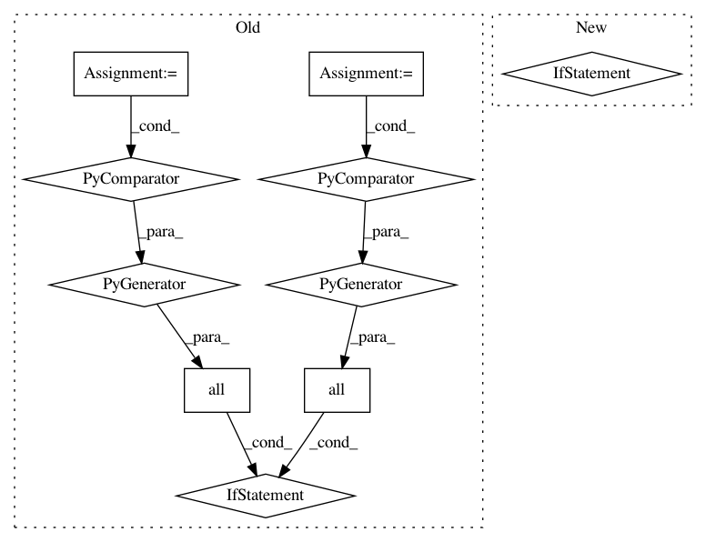

dea6518310856dcc35d3f877f75a2502200cad40,batchflow/models/torch/layers/conv.py,BaseConv,__init__,#BaseConv#Any#Any#Any#Any#Any#Any#Any#Any#,14
Before Change
padding = calc_padding(inputs, padding=padding, transposed=self.TRANSPOSED, **args)
if isinstance(padding, int) or \
(isinstance(padding, tuple) and all(isinstance(item, int) for item in padding)) or \
all(all(inner == item[0] and inner > 0 for inner in item) for item in padding):
// If every element is the same and non-negative, we can use the `padding` of Conv layers
if isinstance(padding, tuple) and all(isinstance(item, tuple) for item in padding):
padding = tuple(item[0] for item in padding)
args["padding"] = padding
self.padding = False
else:
// Otherwise, use custom padding
self.padding = sum(padding, ())
self.layer = self.LAYERS[get_num_dims(inputs)](**args)
def forward(self, x):
if self.padding:
After Change
padding = calc_padding(inputs, padding=padding, transposed=self.TRANSPOSED, **args)
if isinstance(padding, tuple) and isinstance(padding[0], tuple):
args["padding"] = 0
self.padding = sum(padding, ())
else:
args["padding"] = padding
self.padding = 0
self.layer = self.LAYERS[get_num_dims(inputs)](**args)
def forward(self, x):
if self.padding:
In pattern: SUPERPATTERN
Frequency: 3
Non-data size: 10
Instances
Project Name: analysiscenter/batchflow
Commit Name: dea6518310856dcc35d3f877f75a2502200cad40
Time: 2021-02-18
Author: Tsimfer.SA@gazprom-neft.ru
File Name: batchflow/models/torch/layers/conv.py
Class Name: BaseConv
Method Name: __init__
Project Name: probcomp/bayeslite
Commit Name: 671ed2bdfa75d7fe2bebe6f63eb928260e40b7af
Time: 2017-01-30
Author: curlette@mit.edu
File Name: src/guess.py
Class Name:
Method Name: keyable_p
Project Name: pfnet/optuna
Commit Name: 3d77514658eea0a5345544fde016b997ca123592
Time: 2021-01-12
Author: toshihiko.yanase@gmail.com
File Name: optuna/samplers/_nsga2.py
Class Name:
Method Name: _constrained_dominates